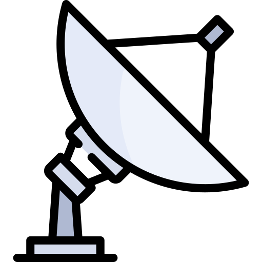

Astronomy 101#
Introduction
Topics
Introduction
Difficulty: 🟢
Status:
 - 🔥
- 🔥Needs: 🏸 - 💏
Read time: 5 min
Cosmic Inventory
Difficulty: 🟡
Status:
- 🔥Needs: 🏸 - 💏
Read time: 5 min
Historical Perspective
Difficulty: 🔴
Status:
- 🔥Needs: 🏸 - 💏
Read time: 1h
Anatomy of a telescope
Difficulty: 🟣
Status:
- 🔥Needs: 🏸 - 💏
Read time: 5 min
Space Missions
Difficulty: 🟡
Status:
- 🔥Needs: 🏸 - 💏
Read time: 20 min
Space Exploration
Difficulty: 🟡
Status:
- 🔥Needs: 🏸 - 💏
Read time: 20 min
✨
The following image is unfortunately becoming a rarety for most of us
Measuring the Universe#

Before to start#
Scales in space and time

Scale – dealing with the miniscule to the massive, over milliseconds to millennia – is central to all the sciences. In this free course, Scales in space and time, you’ll go to the absolute limits of what can be measured – all through a study of an oak tree! By studying it you will be introduced to concepts in physics, chemistry, biology and life-sciences, and Earth and environmental sciences. Across these multiple disciplines you will meet time scales that include ages, durations and rates, and size scales including distances in three dimensions, which underpin areas and volumes.

Pressure#
different pressure environment in the Universe
- Ultra High Vacuum (UHV)
- How do we measure pressure at UHV conditions ?
Temperature#
- create python tool Kelvin/ Degree (Celcius)
Observing the Universe#
There is different “method” to observe the universe:
👀 With your own eyes
 Optical telescopes
Optical telescopes
 Multi-wavelength observations
Feel like practising ?#
Check this Open Learn course made available for free by the Open University to get hands-on experience with a remote telescope (COAST) and produce your first astronomical image.
Astronomy with an online telescope

{kind=link}
{kind=link}
This free course shows you how to navigate the night sky, and introduces the wide variety of objects it contains. You will develop a hands-on understanding of telescopic observations using the Open University’s own robotic telescope facility COAST sited on the island of Tenerife. Supported by your own measurements we illustrate how stars evolve, and study variable stars